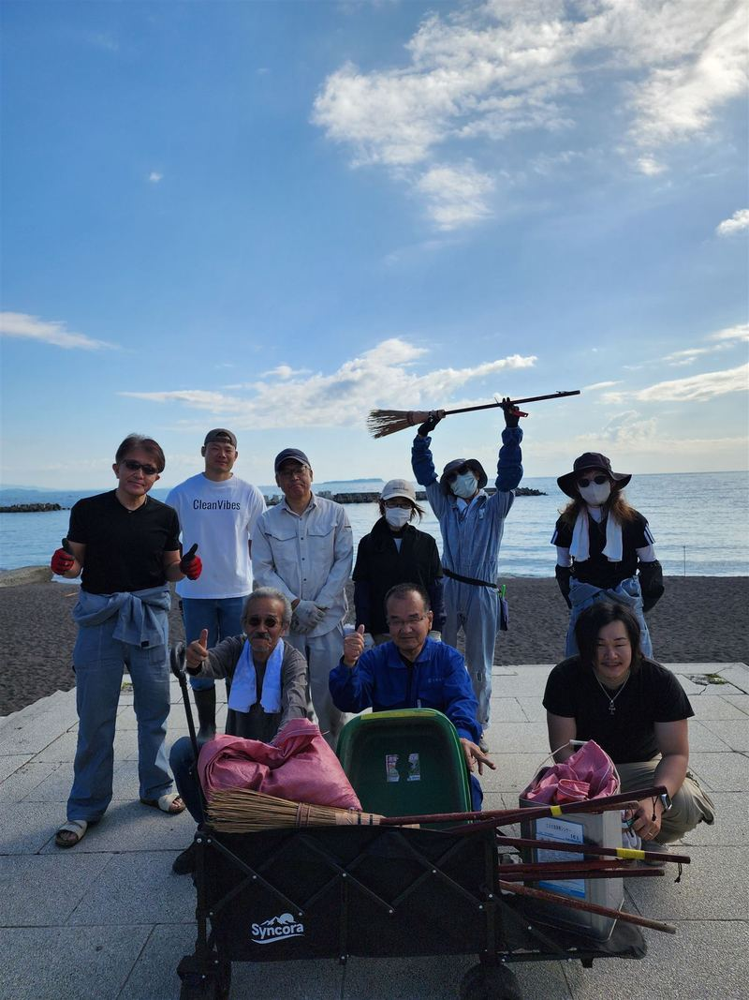
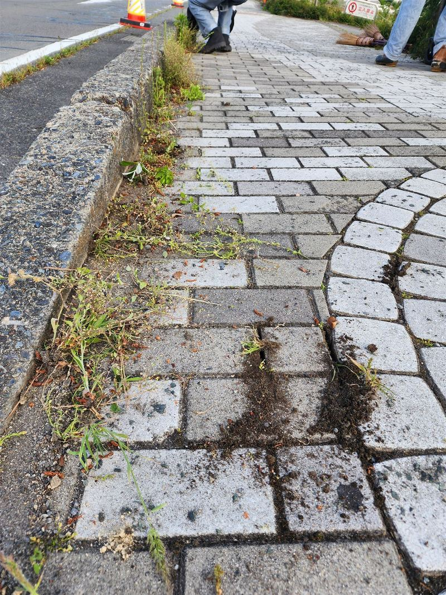
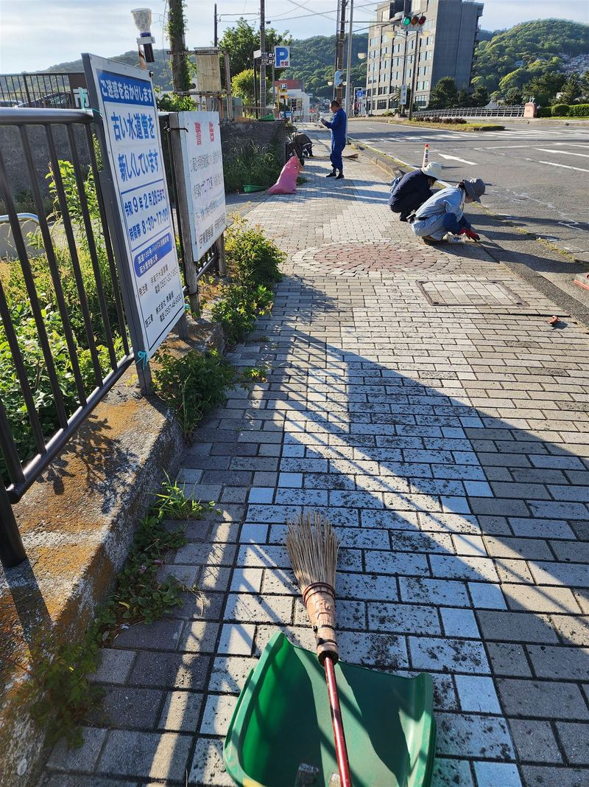

About
私たちについて
2022年4月、伊東のオレンジビーチから活動を始めました。テーマは「綺麗なまちを後世へ」。次の世代に、胸を張って手渡せるまちを残したい。その思いを込めた言葉です。
除草剤は使わないと決めました。子どもや犬が転げ回る地面だから。雨水が、やがて海へ流れていくから。手間はかかります。それでも、これが私たちのやり方です。
道路や身近な公共の場所を、市民が自分たちの手で守る。そんな文化をつくりたいと、私たちは考えています。
2030年、このやり方を届けきったら、私たちは役目を終えます。「届けきって解散する」。それが私たちの目標です。

団体概要
- 団体名
- Clean Vibes（クリーンバイブス）
- テーマ
- 綺麗なまちを後世へ
- 活動開始
- 2022年4月（伊東のオレンジビーチから）
- 拠点
- 静岡県伊東市
- 活動日時
- 土日祝の朝6:30〜7:30（場所は毎回変わります）
- 活動回数
- 累計500回以上（2026年10月時点）
- 運営体制
- 要確認
- 連絡先
- Instagramのダイレクトメッセージ（DM）：@clean_vibes_ito
メール：要確認 - 目標
- 2030年に、このやり方を届けきって解散
研究を参考に、現場で確かめる
国内外の研究や事例を参考にしながら、伊東での実践を通じて改善を重ねています。研究でわかっていることと、私たちの現場での結果は、分けてお伝えします。
資格や高価な機械はいらない
特別な資格や高価な機械がなくても取り組めます。ただし、火を使う工程は経験者が担当し、管理者への確認を必ず行います。
一度きりより、続けること
仕上がりには、とことんこだわります。「ボランティアだから、ここまで」とは考えません。そして、一度きりの完璧より、何度でも通い続けることを選びました。
Method
防草の方法（5つの工程）
防草とは、雑草を生えにくくすることです。ここでは、除草剤を使わずに雑草を生えにくくするための5つの工程を紹介します。「研究でわかっていること」には論文で報告されている一般的な内容を、伊東での結果は「検証と実績」に、分けて書いています。
-
ほじる
土ごと、根ごと取り除く
やり方
専用の道具で、草を根ごと掘り起こします。表面の土に残った根や種も、できるだけ一緒に取り除きます。次に生えてくる草を減らすためです。
研究でわかっていること
畑での調査では、雑草の多くが地表近くの浅いところから芽を出すことが報告されています。
参考：du Croix Sissons ほか（2000）Weed Science 48巻
-
掃く
地面をきれいにする
やり方
ほじった後の土や草くずを掃き集めます。要確認：この工程の目的
-
焼く
地上に出ている草を、熱で傷める
やり方
バーナーの火を短時間だけ当てます。燃やすのではなく、熱で草の細胞を傷める工程です。必要に応じて何度か繰り返します。地中の根や種までは枯らせません。
研究でわかっていること
火を当てたときの効き方は、草の種類や育ち具合によって大きく変わることが報告されています。
安全のために火を使うため、経験者が担当します。管理者への確認、消火の準備、周りの安全確認を必ず行います。要確認：中止の基準・消防への届出
参考：Ascard（1995）Weed Research 35巻
-
埋める
目地や隙間をふさぐ
やり方
目地や隙間を防草材で埋めます。種が入り込む場所を減らすためです。防草材は、場所や景観、管理者の方針に合わせて選び、製品の施工要領に従って使います。要確認：防草材の種類
研究でわかっていること
舗装された場所の雑草対策では、いくつかの方法を組み合わせることや、雑草が生えにくい舗装にすることが有効だとまとめられています。
参考：Rask & Kristoffersen（2007）Weed Research 47巻
-
アルカリ水をまく検証中
効果を確かめている途中の工程
やり方
セスキ炭酸ソーダ（重曹に近い、身近な洗浄成分）を水に溶かしたアルカリ水をまきます。この工程の効果は、いま現場で確かめているところです。要確認：まく目的と、除草剤との違いの説明
どの工程でも、除草剤は使いません。
Results
検証と実績
検証の結果
作業した場所を、3か月後に確かめました
要確認：年4月に作業した場所を、3か月後に確かめました。雑草は約95%抑えられており、生えていたのは、わずかな隙間からだけでした。
※この場所での結果です。要確認：行った工程・確かめ方
ただし、「もう二度と生えない」とは言いません。半年もすれば、雑草はまた顔を出します。本当に、しぶといんです。だから私たちは、何度でも通い続けます。要確認：「半年」がいまの団体の見解か
新しい試み
モルタルを使った防草の実証実験検証中
2026年11月から、左官職人の指導のもと、モルタルを使った防草の実証実験を始めました。効果はこれから確かめます。
Join
伊東で参加する
土日祝の朝、まちに出ています。
初めての方、親子、観光でお越しの方も歓迎です
- 日時
- 土日祝の朝6:30〜7:30
- 場所
- 毎回変わります。Instagramでお知らせします。
- 作業内容
- 除草・防草、側溝の清掃、苔落とし など要確認：いまも行っている作業
- 申し込み
- Instagramのダイレクトメッセージ（DM）で、「参加希望日・お名前・人数」をお送りください。
Instagramをお使いでない方：要確認 - 持ち物
- 軍手（道具はある程度こちらで用意します）
- 服装
- 要確認
- 雨の日
- 要確認
- 保険
- 要確認
- 写真
- 要確認：撮影・掲載の方針
Start
あなたのまちで始める
このやり方を、伊東だけのものにするつもりはありません。伊東市内の他の地域や、埼玉県狭山市など他県でも、同じような取り組みが始まりつつあります。
真似してください。もっと良くしてください。
そして、あなたのまちで始めてください。
STEP 1
方法を知る
このページの「防草の方法」で、5つの工程を紹介しています。
STEP 2
始める前に
公共の場所では、必ず管理者の許可を得てください。火を使う工程は経験のある人が担当し、消火の準備と周りの安全確認をしてから行ってください。経験のある人がいない場合は要確認：団体としての案内。⑤のアルカリ水は、効果を確かめている途中の工程です。
STEP 3
相談・報告する
詳しい資料のご依頼や道具の相談、「うちのまちでもやってみた」というご報告は、InstagramのDMで受け付けています。
History
活動の軌跡
- 2022年4月伊東のオレンジビーチで活動開始
- 要確認：時期しずおかアダプトロード・プログラムで、国道135号のオレンジビーチ沿いの区間について協定（同意書）を結ぶ
- 要確認：時期伊豆新聞に活動が取り上げられる
- 2025年関東商工会議所連合会ベスト・アクション表彰ほか要確認：正式名称・受賞月
- 2026年10月時点活動回数が累計500回以上
- 2026年11月左官職人の指導で、モルタルを使った防草の実証実験を開始
- 2030年（目標）このやり方を届けきって解散
活動の様子





動画で見る
Support
活動を支援する
現場に立つことだけが、参加のかたちではありません。活動を続けるには、道具や資材が欠かせません。いただいたご支援は、防草の資材や道具の購入に大切に使います。企業・団体の皆さまからの協賛も歓迎しています。
これまでに物品や資材、お力添えをくださった皆さま、本当にありがとうございます。
要確認：ほしい物リストのURL 要確認：受け付ける支援（物品・協賛・寄付金） 要確認：使い道の報告方法
Recognition
メディア・受賞・協働
メディア掲載
伊豆新聞
活動が取り上げられています（諏訪市での活動の記事など）。要確認：掲載日・記事の見出し
受賞
関東商工会議所連合会 ベスト・アクション表彰ほか
2025年要確認：正式名称・受賞月
Contact
お問い合わせ
- 活動への参加
- Instagramのダイレクトメッセージ（DM）
- 自分のまちで始めたい・資料がほしい
- InstagramのDM
- 支援・協賛のご相談
- 要確認：メールまたはフォーム（当面はInstagramのDM）
- 行政・報道機関の方
- 要確認：メールまたはフォーム（当面はInstagramのDM）